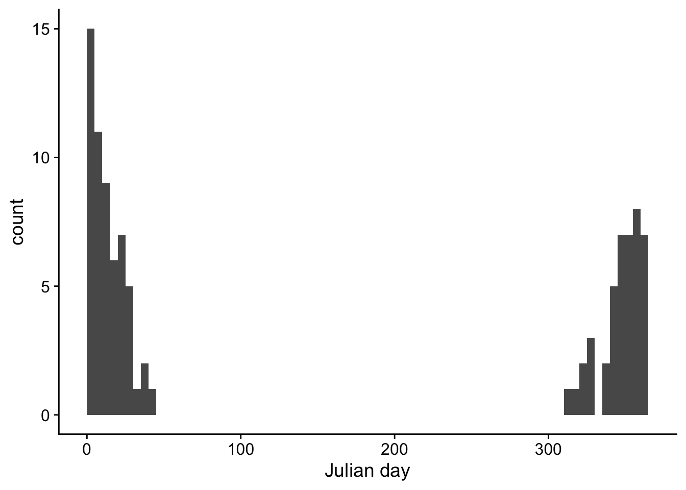
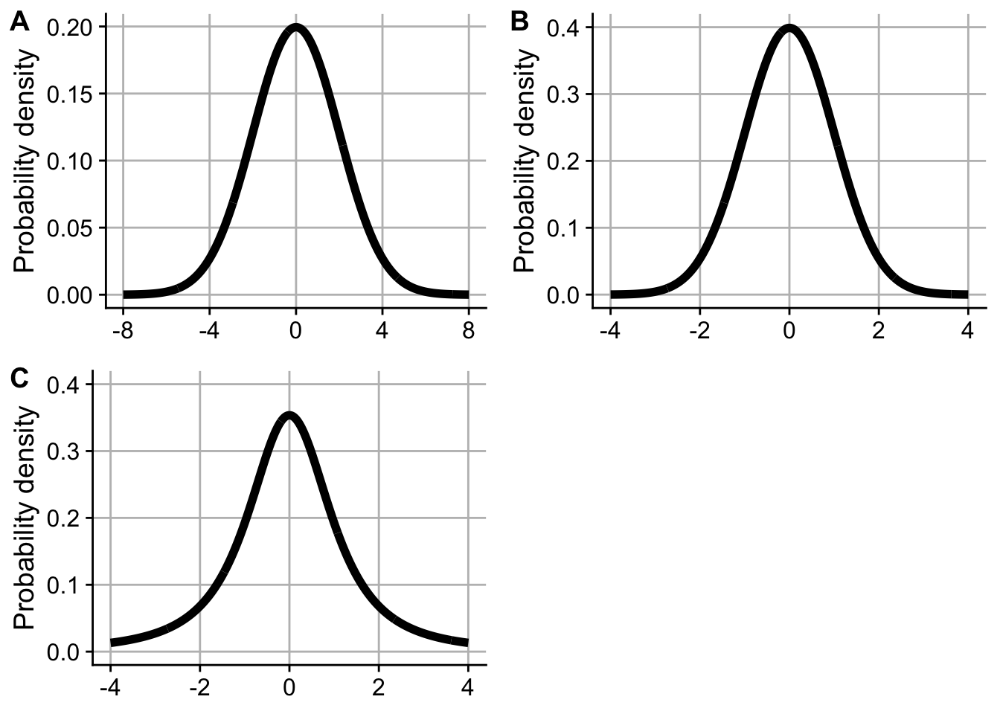

8 Analyzing means with t-tests
8.1 Phenology
According to Wikipedia, “Phenology is the study of periodic events in biological life cycles and how these are influenced by seasonal and interannual variations in climate, as well as habitat factors”. Suppose that you want to test a hypothesis about the timing of a winter-flowering plant. You survey a random sample of 100 plants from a population every day of the year and record the number of plants producing their first flower on that date. The figure below shows the number of plants that first flower on a given Julian day (January 1 has Julian day of 0; December 31 has a Julian day of 365).
Question 31 refers to the prompt and figure above.
Would a one-sample \(t\)-test be an appropriate method to test a hypothesis about the mean time to first flower in this population? Answer the question assuming you cannot make any changes to the data, such as binning or transformation. [1]
- Yes, the data meet all the assumptions of the one-sample \(t\)-test
- No, because the data are discrete counts per day rather than continuous
- No, because it’s not possible to state a null hypothesis
- No, because the data are not normally distributed
8.2 Banana peels and Lotus leaves
How slippery are banana peels? “Slipperiness” is measured by the coefficient of friction. A small value for the coefficient indicates less friction (more slippery) than a larger value. For reference, another slippery biological material, the water-repellent Lotus leaf has a coefficient of 0.05. Below are 41 measurements of the coefficient of friction of banana skins on linoleum, with the slippery side down (Mabuchi et al. 2012).
# Banana coefficient of friction (cof)
# You can copy-and-paste into R
banana_cof <- c(0.029, 0.034, 0.036, 0.037, 0.039, 0.041, 0.041,
0.042, 0.043, 0.043, 0.045, 0.047, 0.047, 0.048,
0.048, 0.048, 0.053, 0.054, 0.054, 0.054, 0.055,
0.055, 0.056, 0.056, 0.057, 0.059, 0.06, 0.062,
0.062, 0.063, 0.064, 0.065, 0.069, 0.069, 0.07,
0.071, 0.075, 0.078, 0.080, 0.113, 0.125)
Questions 2–8 refer to the prompt and data above
Suppose that you want to test whether the banana peel is more slippery than a Lotus leaf using a one-sample \(t\)-test. What is an appropriate null hypothesis? [1]
- \(\mu = 0.05\)
- \(\mu = 0.025\)
- \(\mu = 1\)
- \(\mu = 0\)
For a one-sample \(t\)-test, how many degrees of freedom would you use for this data set? [1]
Calculate the 95% confidence intervals of the mean of the coefficient of friction for the banana peel data. Report your answer rounded to the nearest 0.001 and separated by a “-”, like this: 0.123-0.456. [1]
For a one-sample \(t\)-test, calculate the test statistic rounded to the nearest 0.001. [1]
For a one-sample \(t\)-test, what is the \(P\)-value? [1]
Based on your confidence intervals and \(P\)-value, are banana peels significantly more slippery than Lotus leaves? [1]
A better test of whether banana peels are more slippery than Lotus leaves would be to have replicated measures of the coefficient of friction of multiple different Lotus leaves.
Imagine this is such a dataset on Lotus leaves:
lotus_cof <- c(0.052, 0.062, 0.056, 0.039, 0.043, 0.046, 0.046, 0.062, 0.077, 0.051, 0.048, 0.064, 0.058, 0.059, 0.051, 0.023, 0.051, 0.032, 0.047, 0.052, 0.066, 0.053, 0.043, 0.053, 0.045, 0.057, 0.051, 0.041, 0.047, 0.041)Use a two-sample t-test to test the null hypothesis that the means of the two vectors are equal. To answer this question, paste the output of
t.testinto the google form
8.3 Distinguishing distributions
The figure plots 3 continuous probability distributions: \(\text{Normal}(\mu = 0, \sigma = 2)\), \(t_2\), and the \(Z\) distribution).

Questions 9–10 refer to the figure above.
Which figure shows the \(t_2\) distribution? [1]
Which figure shows the \(Z\) distribution? [1]